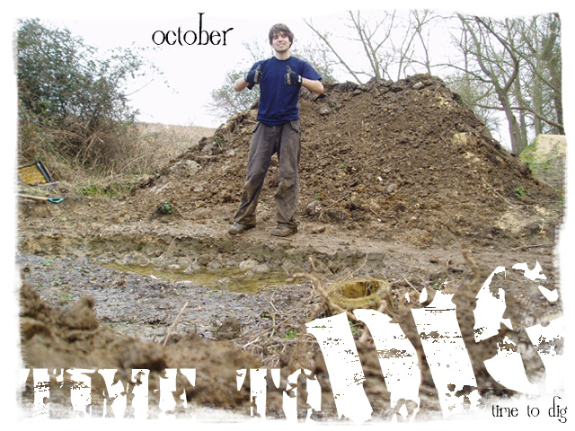

|

It's October and it's raining a lot. It seems
like there is a lot of time until next summer so you might think its not
worth starting to dig just yet, but there's only about a month until the
clocks change and you won't be able to dig after work. Ideally you want to
get the jumps in place as early as you can so they get rained on for a few
months and go really hard. In which case you need to start moving the earth
as soon as possible. I have written a few more
digging tips to help you on your way.
Home | Messages
| 40-40 |
|